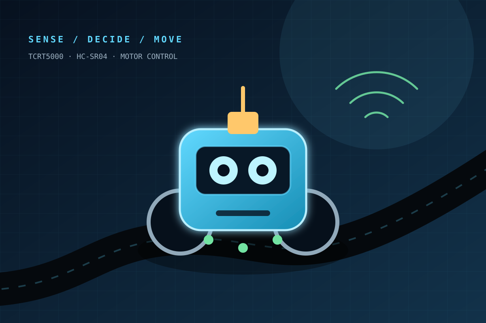

PROJECT 02 · ROBOTICS · EMBEDDED CONTROL
Autonomous Line Following & Obstacle Avoiding Robot
The first project where my code moved something in the real world: a two-wheel Arduino robot that follows a track, detects obstacles, scans both directions, and chooses a safer path.

The moment code became motion.
This robot was an introduction to the complete embedded loop: sense the environment, interpret the readings, decide what to do, and drive physical actuators. The limited 8-bit platform made simple, dependable control more valuable than unnecessary algorithmic complexity.
Two behaviors, one control loop.
Normal operation uses three infrared sensors to correct the robot’s position over a black line. When the ultrasonic sensor detects an obstacle inside the safety threshold, the robot pauses line following and enters an avoidance sequence.
A compact mobile system.
The Arduino Uno coordinates sensing and movement through an L293D motor shield. A separate buck regulator helps maintain a stable 5 V rail when motor current and electrical noise would otherwise disturb sensor readings.
Hardware made the edge cases visible.
The most useful lessons came from behavior that looked fine in code but failed on a physical track. Sensor calibration, motor noise, power stability, and the timing interaction between servo movement and wheel control all changed the result.
- Calibrate reflectance thresholds for different lighting and surfaces.
- Separate movement states to keep obstacle handling predictable.
- Regulate the supply to reduce motor-induced sensor instability.
- Balance responsiveness against the resources of a small microcontroller.
SOURCE & NOTES